Ahjon Herrat
Ahjon Herrat (Forge Lords) olivat Tekijöitä Tekijät, jotka taivuttivat tulen ja metallin tahtoonsa. He rakensivat laajan sivilisaation Huffelin huipuille Huffelin huiput ja niiden takaisen meren rannoille. He takoivat ihmeitä ja kävivät kauppaa muiden Tekijöiden kanssa nykyisen Gordinin Kaivoksen Gordinin Kaivos paikalla.
Heistä tuli varakkaita, ylpeitä ja vahvoja.
Ahjon Herrojen sisällä paloi tuli. Se ruokki heidän taikuuttaan mutta myös heidän intohimoaan ja luovuuttaan, heidän rakkauttaan kauneuteen ja käsityötaitoon. Heidän haluaan tehdä paremmin, olla parempia. Mutta tämä tuli oli myös kirous. Jos sen annettiin palaa hillitsemättä – jos he antautuivat kunnianhimolle, kateudelle ja ahneudelle – se saattoi kuluttaa heidät. Polttaa pois heidän jalommat tunteensa ja vääntää heidät kauheiksi, tulta syökseviksi pedoiksi.
Suojautuakseen tältä kiroukselta Ahjon Herrat ylistivät uskollisuutta ja anteliaisuutta. He noudattivat tiukkoja vieraanvaraisuuden ja säädyllisyyden sääntöjä. Vuosisatojen ajan se toimi. Heidän maansa kuhisivat politiikkaa ja petoksia, mutta veriset murhat olivat harvinaisia. Vain kaikkein turmeltuneimmat kansalaiset menettivät itsensä Muutokselle.
Sitten tuli Mullistuksen aika Alla Olevat. Tulivuoret syöksivät laavaa ja tuhkaa. Ahjon Herrojen pääkaupunki Moratia Rubra tuhoutui. Niin tuhoutuivat monet heidän kaivoksistaan, valimoistaan ja kartanoistaan.
Heidän yhteiskuntansa syöksyi kaaokseen. Ja Alla Olevat Alla Olevat lietsoivat koston, ahneuden ja vainoharhan liekkejä.
Kilpailu vaihtui murhiksi. Murhat vaihtuivat verilöylyksi. Vain ne, jotka syleilivät Muutosta, selvisivät. Ja pian Ahjon Herroja ei enää ollut. Jäljelle jäivät vain draventaot draventaot.
Nimet
Portugalilais- ja galicialaissävyisiä, mutta usein 4- tai 5-tavuisia: Anacarbrugel, Barximare, Cagacola, Liainlosoi, Mancaoro, Olarela, Patomecie, Ronofoxur, Toloalare, Velanbria, Xeixabrun
Usein arvonimiä kuten Dominar (”Mestari”), Ogran (”Suuri”).
Koukut
- Kaivosmiehet ryöstävät ja myyvät rautakoirien Rautakoira vartioimaa aarretta, mikä käynnistää karmeiden kuolemien ketjun.
- Ustrinat Ustrina varoittavat pelaajahahmoja pysymään poissa eräästä Ahjon Herrojen rauniosta, mutta miksi?
- Roisto löytää draventaon pesän ja haluaa apua sen ryöstämiseen.
- Kauppias kuljettaa salaa lastia orikalkkia orikalkkia markkinoille.
- Malminetsijät löytävät hohkakiveen hautautuneen ja säilyneen Ahjon Herrojen asutuksen.
Teemat
Valitse tai heitä .
| 1 | Tuli ja kuumuus, laava, savu ja hiillos, tuhka ja kekäleet |
|---|---|
| 2 | Teollisuus: ahjot ja uunit, upokkaat ja polttouunit, valimot ja polttoaine, myllyt ja kaivokset ja kaikki, mitä ne kuluttavat tai tuottavat |
| 3 | Taiteellisuus: innoitus, keksintö, erinomaisuuden, kauneuden tai totuuden tavoittelu |
| 4 | Elävä metalli: kellokoneistokonstruktit, henkiastiat, lihaan sulautetut proteesit |
| 5 | Heikkous poltettuna pois: luoda, muuttaa, tuhota, puhdistaa |
| 6 | Ustrinat: palvelijat/ ryhmittymät/kilpailut/salaisuudet/juonet/ uskollisuus/petos |
| 7 | Liekkiin leimahtaneet intohimot: nälkä, himo, kateus, ahneus, pakkomielle, vainoharha ja viha |
| 8 | Mullistus: purkaukset, kauhu, verilöyly, yhteiskunnan romahdus, vajoaminen kaaokseen |
| 9-12 | Jättiläisten mittoihin tehty, ja heitä uudelleen |
Kohteet
Valitse tai pyydä jotakuta heittämään Kohtalon noppaa.
| 1-3 | Jäljet heidän läsnäolostaan ja vaikutuksestaan (ks. alla) |
|---|---|
| 4-6 | Raunio |
Jäljet
Valitse tai pyydä jotakuta heittämään Kohtalon noppaa.
| 1 | Tuhon jälkiä (viereinen palsta), arpi maailmassa |
|---|---|
| 2 | Teollisuuden jälkiä (viereinen palsta) kauan sitten |
| 3 | Tulinen henki (seuraava sivu), sidottu johonkin hyödylliseen tarkoitukseen |
| 4 | Muistomerkki tai merkkikivi (seuraava sivu) |
| 5 | Pätkä Tekijöiden teitä, ehjää, rikkinäistä ja/tai tuffiin hautautunutta |
| 6 | Kätketty aarrekätkö täynnä erilaisia aarteita |
Tuhon jälkiä
Esimerkiksi:
- Savupiippuja ja muurinkappaleita, jotka törröttävät raunioista ja tuffista hiiltyneinä ja pölyisinä.
- Vuorenrinne, sulanut ja sileä kuin musta lasi.
- Aukio pitkään palaneen kivihiilisauman yllä: karu, kupruileva ja halkeillut, maa valkoiseksi hiiltynyt, ilma pahanhajuista hengittää ja kuumaa talvellakin.
- Ustrinoiden joukkohauta, ehkä myös yksi tai kaksi Ahjon Herraa, haudattuina sen sijaan, että heidät olisi poltettu asianmukaisesti.
- Suuren matelijapedon luut, joiden kylkiluihin ja selkärankaan on sulautunut ruostuneita levyjä (panssaria?). Kallo on murskattu sisään, hampaat väännetty irti ja poissa.
Tällaiset paikat voivat hyvinkin olla kummituspaikkoja Kuolema ja kuolemattomat ja/tai Alla Olevien Alla Olevat turmelemia.
Teollisuuden jälkiä
Esimerkiksi:
- Uurre kallioperässä, kuin kuoppa tai kanjoni porrastetuin seinämin – muinainen avolouhos.
- Järvi, suo tai lampi: kalkkiset rannat, metalliset pyörteet, kitukasvuinen elämä.
- Kuonakasa: kuoppaisia, nyrkin kokoisia kiviä (himmeän punaisia ja karheita tai lasimaisen sinisiä ja vihreitä), enimmäkseen karu ja hyvin epävakaa.
- Vuoren huippu yksinkertaisesti poissa, romahtanut itseensä tai muuttunut kraatteriksi.
- Uinuvan tulivuoren kaldera. Reunaa täplittävät ruosteiset, riimuin kaiverretut tornit, ja ympäristöä peittävät valtavat, kuoppaiset ketjut.
- Akveduktin kappaleita, yhä kauniiden keraamisten laattojen koristamia.
Tulinen henki
Esimerkiksi:
- Sulatusuuni, yhä lämmin peitetyistä hiilistä, joita unelias, alakuloinen henki on pitänyt kytemässä vuosisatoja.
- Riimuin kaiverrettu marmorilaatta magma-altaan edessä. Sitoo henkeä, joka ilmenee sulasta kivestä tehtynä hahmona. Auttaa metallitöissä vastineeksi juoruista.
- Kidematriisi, tusinan pienen liekin koti; liekit ovat palaneet vuosisatoja ilman polttoainetta. Itsevarmoja suunsoittajia, mutta varsin fiksuja ja uutuuksien nälkäisiä.
- Valtava pronssinen villisian patsas, kita ammollaan. Sen sisällä asuva henki kuluttaa esineiden syttyvyyden ja tekee niistä tulenkestäviä. Mutta itse patsas syttyy pienimmästäkin kipinästä ja palaa kuin kuuma öljy.
- Pieniä liekkihenkiä, kukin sidottuna eri lasipalloon, jotka on upotettu seinään tai kalusteeseen. Syttyvät palamaan ihmisten läsnä ollessa ja jutustelevat ystävällisesti.
- Tuhkahaamu Savu, tuli ja kuumuus ja luut, joihin se on sidottu, muurattuina seinän taakse jonkin Ahjon Herran kellarissa
Muistomerkki tai merkkikivi
Esimerkiksi:
- Ylhäisen hahmon pronssipatsas, aikoinaan 18 metriä korkea, löytyy kaatuneena, lommoisena ja laaksoon hautautuneena.
- Toinen valtava ylhäisen hahmon pronssipatsas, yhä huipullaan mutta puoliksi sulanut.
- Muotokuva vuorenrinteellä, miljoonista lasihelmistä tehty mosaiikki.
- Saumaton basalttitorni, jonka huipulla on hohtavasta messingistä tehty avoin sipulikupoli, jonka sisällä palaa ikuinen liekki.
- Talon kokoinen marmorilaatta. Toista puolta peittää pronssilaatta, johon on syövytetty tiiviisti kalligrafisia riimuja, enimmäkseen lukukelvottomia jäkälän alla.
Raunio
Valitse tai heitä teemat, rakenne, tarkoitus, arkkitehtoniset piirteet, kunto ja ustrinoiden läsnäolo. Sijoita se sopivaan maastoon (ks. Gordinin Kaivos Gordinin Kaivoksesta, Huffelin huiput Huffelin huipuista tai Labyrintti Labyrintista).
Kansoita se Ahjon Herrojen tai kyseisen seudun jäljillä Kohteet, artefakteilla artefakteilla ja/tai vaaroilla Kaksi peiliä.
| 1 | Ryhmä pienempiä rakennuksia |
|---|---|
| 2 | Yksi suurempi rakennus avoimen sisäpihan, puutarhan tai altaan ympärillä |
| 3 | Suuri avoin tila |
| 4 | Sokkeloinen rakenne, monia toisiinsa yhteydessä olevia huoneita tai rakennuksia |
| 5 | Vuoreen tai kallioperään hakattuja tunneleita tai holveja |
| 6 | Linnoitettu kompleksi, jossa on useita edellä mainituista |
Pelaajahahmot ovat Gordinin Kaivoksessa Gordinin Kaivos
kallioharjanteisiin, jotka ympäröivät Gordinin Kaivosta, joten valitsen rakenteeksi ”tunneleita tai holveja”, kunnoksi ”hautautunut… mutta enimmäkseen ehjä” ja ustrinoiden läsnäoloksi ”ei mainittavaa”. Heitän teemaksi 3 (taiteellisuus), tarkoitukseksi 6 (huvi) ja arkkitehtonisiksi piirteiksi 1 (kupolit/ kaaret/pylväät/pylväikkökäytävät). Kuvittelen seuraavaa:
| 1 | Asumus (koti, kartano, kasarmi, asunnot tms.) |
|---|---|
| 2 | Infrastruktuuri (akvedukti, vesisäiliö, silta, tunneli, linnoitus tms.) |
| 3 | Varastointi (holvi, varasto, aarrekammio, vilja-aitta tms.) |
| 4 | Tuotanto (paja, työhuone, kaivos tms.) |
| 5 | Kansalaiselämä (kylpylä, tori, puutarhat, muistomerkki, hallinto tms.) |
| 6 | Huvi (galleria, ravintola, teatteri, areena tms.) |
ja hakevat pääsyä Mutra Hampaan puheille. Uskon, että hänen tilansa on yksi kaupungin Ahjon Herrojen raunioista. Kuvittelen jotakin, joka on hakattu
| 1 | Kupolit/kaaret/pylväät/pylväikkökäytävät |
|---|---|
| 2 | Keramiikka ja lasityöt: mosaiikit, laatat, uurnat, lasimaalaukset, peilit |
| 3 | Emali/lasite/kultaus/virtaavat riimut |
| 4 | Tiilet/marmorilaatat/kaiverrettu porfyyri |
| 5 | Patsaat/reliefit (pronssia tai marmoria) |
| 6 | Uunit/upokkaat/savupiiput/ ketjut/hammasrattaat |
Useimmat Tekijöiden rauniot on tehty jättiläisten mittoihin – kahden tai jopa kolmen ihmisen pituisille olennoille – mutta niissä on usein pienempiä huoneita, käytäviä ja muuta palvelijoita varten.
Mutran tila oli aikoinaan jonkin Ahjon Herran kerättyjen rikkauksien näyttelysali. Ulkoa se on kuin Petran aarrekammio Jordaniassa – pylväitä syvennetyn sisäänkäynnin edessä ja kohoava kaari. Kaari johtaa valtavaan saliin, jossa on korkea kupolikatto ja lukuisia tyhjiä jalustoja, kukin pitkää miestä korkeampi. Mutran väki on pingottanut jalustojen väliin sermejä jakaakseen salin majoitukseksi, varastoksi ja niin edelleen. ”Pienemmät” sivukammiot, jotka on hakattu syvemmälle kallioon, kätkevät Mutran yksityiset asuintilat – ja hänen oman, kaikkea muuta kuin vaatimattoman kokoelmansa.
| 1 | Ajan, sodan tai ilkivallan murskaama ja hävittämä; enimmäkseen hautautunut, umpeenkasvanut, romahtanut; tarkoitusta ei voi tunnistaa |
|---|---|
| 2 | Mureneva, suurelta osin hautautunut, umpeenkasvanut tai piilossa |
| 3-4 | Hautautunut, veden alla ja/tai umpeenkasvanut, mutta enimmäkseen ehjä |
| 5-6 | Täysin näkyvissä ja oudon hyvin säilynyt |
| 1 | Asutus, jossa asutaan |
|---|---|
| 2 | Kaksi tai useampia ryhmiä, keskenään riidoissa |
| 3 | Pyhiinvaeltajia/raadonkerääjiä/vartijoita tms. |
| 4 | Asutus, asumaton/ hylätty |
| 5 | Uhrilahjoja/ilkivaltaa/kaivauksia tms. |
| 6 | Ei mainittavaa |
Jos ustrinoita Ustrina on paikalla tai on ollut, harkitse :n heittämistä antamaan käsitys heidän lukumäärästään.

OrikalkkiMystinen metalli, joka leimahtaa punaisena kuin tuli ja polttaa pois epäpuhtaan, Alla Olevien Alla Olevat ja luonnon vääristymien turmio. Ahjon Herrat tunsivat sen salaisuudet – miten sitä louhitaan, sulatetaan, seostetaan ja työstetään – ja sitä pidettiin aarteena jo heidän aikanaan.
Valitse tai heitä pelaajahahmojen kohtaaman orikalkin laji.
| 1 | Lähes puhdasta, työstämättömiä hippuja/ harkkoja, täynnä mahdollisuuksia (Arvo 2) |
|---|---|
| 2-3 | Lähes puhdasta, valettu riimuiksi (karkottaa luonnon vääristymiä, suojaa niiden taikuudelta, Arvo 2) |
| 4 | Seostettu kuparin ja tinan kanssa, jauhettu (polttaa luonnon vääristymiä; Arvo 1) |
| 5 | Seostettu kullan kanssa, hiutaleina, sekoitettu eliksiiriin (polttaa pois myrkyn/ taudin/turmeluksen, jos juoja selviää, Arvo 2) |
| 6 | Seostettu lyijyn kanssa, jauhettu (hälventää epäpuhdasta taikuutta, Arvo 2) |
| 7 | Seostettu magnesiumin kanssa, taottu amuletiksi (palaa valkohehkuisena valanrikkojan kosketuksesta, Arvo 2) |
| 8 | Seostettu raudan kanssa, taottu palloksi (hehkuu kirkkaanpunaisena harhakuvien lähellä ja paljastaa ne vääriksi, Arvo 2) |
| 9-10 | Seostettu tinan ja arseenin kanssa ja valettu aseeksi/kilveksi/rintahaarniskaksi (+2 Arvoa), lasketaan pronssiksi aina kun sillä on merkitystä |
| 11-12 | Seostettu tarpeen mukaan ja työstetty johonkin sopivaan muotoon, sitten kyllästetty tuleen/ totuuteen/puhdistukseen liittyvällä taikuudella |
Harkitse :n heittämistä koon, määrän ja/tai mittakaavan määrittämiseksi.
Orikalkki sulaa tai höyrystyy usein polttaessaan pois epäpuhtautta. Oikea seostus auttaa estämään tätä, mutta hyvin tehty orikalkkikeihäskin voi muuttua kuonaksi iskiessään turmeltuneen vihollisen maahan.
Antrasiitti
Kiiltävä, harmaanmusta kivi, puhdistetun kivihiilen muoto. Syttyy kuin kuiva puu, mutta palaa kuumemmin ja pidempään ja hyvin vähin savuin. Ahjon Herrat käyttivät sitä uuniensa ja polttouuniensa polttoaineena tai vain kotiensa lämmittämiseen.
Jotkut ustrinat Ustrina tuntevat sen valmistuksen salaisuudet (kivihiilen keittäminen, sen kyllästäminen muista esineistä uutetulla syttyvyydellä), vaikka heiltä (luultavasti?) puuttuu väkeä laajamittaiseen kivihiilen louhintaan.
He myyvät toisinaan antrasiittia Gordinin Kaivoksessa, mutta vain pieniä määriä. Pomot tai eteläiset kauppiaat Lygos ja etelä aloittaisivat sotia saadakseen selville, miten sitä voisi tuottaa massoittain.
Muut materiaalit
Monet Ahjon Herrat osasivat valmistaa aetheriumia Myrskyn Herrat ja antaa sille erityisominaisuuksia.
He todennäköisesti opettivat Myrskyn Herroillekin yhden tai kaksi asiaa.
Muutamat Ahjon Herrat osasivat luoda tekijälasia Kiven Herrat tai ainakin muotoilla sitä, mutta eivät koskaan Kiven Herrojen taidolla ja näppäryydellä.
Ahjon Herrat arvostivat mustaa rautaa Alkuvoimat. Sitä voi työstää vain tulella, voimalla ja taidolla – ei taikuudella – joten vain mestariseppien käsissä se taipui.
Muutamat Ahjon Herrat kokeilivat punakidettä Alla Olevat, Alla Olevien innoittamina tai vain tarpeeksi ylimielisinä kuvitellakseen pystyvänsä hallitsemaan sitä.
Artefaktit
 Erilaisia aarteita
Erilaisia aarteita
- lasipulloa (hauras, Arvo 0), joihin on syövytetty Ahjon Herran merkki
- antrasiittimöhkälettä (Arvo 1), kukin riittää hyvän ruokatulen polttoaineeksi yön ajan
- Pehmustettu kotelo◇, jossa on 4 savipalloa; kussakin on voimakasta naftaa, joka palaa kuumana ja tahmeana joutuessaan ilmaan (vahinko , heitettävä, alue, vaarallinen, ohittaa panssarin)
- Kultainen Möbiuksen nauha ketjussa (Arvo 2)
- Ylisuuri ◇◇ orikalkkinen keihäänkärki (Arvo 2), liian iso käytettäväksi, mutta seppä voisi valaa sen uudelleen
- Laatikko◇, jossa on kellokoneistodioraama; kierrä avaimesta, niin se soittaa musiikkia ja naamioidut hahmot tanssivat ja pyörähtelevät (hauras, maaginen?, Arvo 3)
- Virheetön maljakko◇ (hauras, kaunis, Arvo 4), noin 60 cm korkea, sateenkaarenkirjava lasite; muistuttaa elämän haurautta
- Kasa kolikoita, koruja, taidetta ja ihmeitä (liikkumaton, Arvo 5), draventaon aarre
Ks. myös: kummallisuudet ja ihmeet, joita ustrinat toisinaan tuovat Gordinin Kaivokseen kaupattaviksi.
Orikalkkinen keihäs
Varsi pitää vaihtaa, mutta itse keihäänkärki on koskematon, kaunis ja terävä kuin kuuma liekki. Kun isket luonnon vääristymää keihäällä, teet + vahinkoa.
Kun isket luonnon vääristymää ja heität suurimman mahdollisen vahingon (mahdolliset lisänopat mukaan lukien), teet vielä + vahinkoa, kun keihäänkärki leimahtaa ja sulaa arvottomaksi kuonaksi.
Ylisuuri sormus
Nyrkin kokoinen sinettisormus, iso Tekijöidenkin mittapuulla, orikalkkia. Se hehkuu kuin sammuva kekäle mutta tuntuu viileältä.
Kun joku valehtelee sormuksen läsnä ollessa, hänen kielensä rakkuloituu ja palaa. Mitä suurempi valhe, sitä enemmän vahinkoa.
Jotain kiinnostavaa: Tämä oli erään hyvin varakkaan ja merkittävän Ahjon Herran sinettisormus; ustrinat Ustrina ovat usein kovin kiinnostuneita tällaisista.
Jotain hyödyllistä: Tämä oli Omelor Xonanen, maineikkaan artesaanin, sinettisormus.
Monien hänen töidensä sanottiin olevan avattavissa tällä sinettisormuksella. Kuka tietää, mitä ihmeitä se voisi avata?
Kaksi peiliä
Toinen on virheetön hopeoitu ◇◇ peili (maaginen, kaunis, hauras, Arvo 4), 90 cm korkea kultaisessa kehyksessä. Kehystä koristavat Ahjon Herrojen riimut, jotka kääntyvät näin: ”Kauniille Esélleni, uskolliselleni, kalliolleni.” Toinen on pienempi, vaatimaton peili ◇ (maaginen, hauras, Arvo 2), vain 30 cm korkea pronssikehyksessä. Siinä on sama kaiverrus kuin toisessa peilissä, mutta peilikuvana. Kehyksestä työntyy esiin pieni neula, tummaksi tahriintunut.
Kun pistät sormeasi ja kosketat pienempää peiliä, se näyttää sen, mikä heijastuu suuremmassa peilissä, kunnes irrotat kosketuksen.
Veresi imeytyy pintaan jättämättä tahraa.
 Pienet arkaanit
Pienet arkaanit
Valitse 1 tai pyydä jotakuta heittämään.
| 1 | Riimuja raunioituneen salin ympärillä |
|---|---|
| 2 | Runsaasti kudottu matto |
| 3 | Metallimies |
| 4 | Malminetsijän tarina |
| 5 | Ruosteinen teräsmiekka |
| 6 | Riimuinen polttorauta |
Suuret arkaanit
Nämä voivat hyvinkin liittyä Ahjon Herroihin.
- Veressä Karkaistu Miekka Veressä Karkaistu Miekka
- Punainen Valtikka Punainen Valtikka
Vaarat
Olennot
- Ustrinat Ustrina, tietenkin
- Tulihenget Erämaan henget, sidottuina uuniin, ahjoon tai sulatusuuniin, todennäköisesti nälkäisiä ja heikkoja
- Tulipyörre Myrskyn Herrat, asetettu vartioimaan Ahjon Herran rauniota
- Caralandraoiden Huffelin huiput perhe, joka etsii taikuutta raadonsyöjän tapaan tai pesii rauniossa
- Tulitraakkeja Huffelin huiput tai magmamatoja Labyrintti, jotka paistattelevat Ahjon Herran sulatusuunin viipyvässä kuumuudessa
- Jossakin mullistuksessa tai väkivaltaisessa puhdistuksessa kuolleiden aaveet Kuolema ja kuolemattomat
Vaaratekijät
- Epävakaa rakennelma: tulen, ruosteen ja iän heikentämä
- Kivihiili- tai antrasiittikasoja: syttyviä, pölyisiä, epävakaita
- Kuonakasoja, epävakaita ja valmiita muuttumaan kivivyöryksi Porrasmaat
- Magma-altaita tai -virtoja
- Tulivuoren toimintaa Huffelin huiput
- Ikiaikainen liekki Alkuvoimat, muinaisten riimujen sitoma, kauhea päästessään valloilleen
 Savu, tuli ja kuumuus
Savu, tuli ja kuumuus
Useimmat Ahjon Herrojen rauniot ovat kylmiä ja tuhkaisia, eikä niissä ole juuri mitään palavaa jäljellä. Mutta joissakin on kasoittain käyttämätöntä polttoainetta (kivihiiltä, antrasiittia tms.) tai maagisen tulen lähteitä.
- Näytä varoitus: polttoaine valmiina syttymään, magmasta tai muinaisesta sulatusuunista hohkaava kuumuus, kuumuudesta väreilevä ilma
- Kärvennä heitä kovalla kuumuudella ( vahinkoa)
- Sytytä joku tai jokin tuleen
- Täytä alue tukahduttavalla savulla (heikkoudet)
- Tuki reitti savulla tai tulella ( vahinkoa, ohittaa panssarin)
- Saa heidät liekkien leimahdukseen ( vahinkoa, sotkuinen, ohittaa panssarin)
- Nielaise joku, sytytä hänet tuleen ( vahinkoa, sotkuinen, ohittaa panssarin)
 Tuhkahaamu
Tuhkahaamu
HP 23; Panssari 1 (muodoton)
Vahinko rakkuloita nostattavat liekit (käsi, tarttuva, sotkuinen, ohittaa panssarin)
Erityispiirteet tulenkestävä, horroksessa ilman raitista ilmaa ”hengitettäväksi”, sidottu luihinsa
Vaisto: polttaa eläviä
- Ilmesty irvistävänä tulipatsaana ja mustuneina käsinä (vain vesi tai hopea vahingoittaa)
- Sulata hopeaa tai pronssia, heikennä terästä tai rautaa, sytytä puuta, kärvennä lihaa
- Nielaise elävä olento, kärvennä sekä liha että sielu (tee vahinkoa edulla, aiheuta heikkouksia, vahingoita tulenkestäviäkin vihollisia)
Ahjon Herrojen sisällä paloi tuli, joka uhkasi kuluttaa heidät jo heidän eläessään. Ja kun he kuolivat pahasti – hitaasti, epätoivoisina, petettyinä ja avuttoman raivon vallassa – tuo tuli saattoi jäädä palamaan. Ensin se poltti pois Ahjon Herran lihan, sitten hengen ja sitten sielun. Ja sitten se odotti luissa kuin kuumuus peitetyissä hiilissä. Odotti raitista ilmaa antamaan sille uutta elämää ja tuoreita sieluja poltettavaksi polttoaineena.
 Metallikonstruktit
Metallikonstruktit
Ahjon Herrat pystyivät puhaltamaan elämää metalliin nokkelan käsityön, henkitaidon ja taikuuden avulla. Monet näistä ihmeistä ovat yhä jäljellä, vaikka vain harvat toimivat enää, ja nekin ehkä huonosti.
Valitse tai heitä tarkoitus ja rakenne, sen elävöittämisen lähde sekä sen ominaisuus, koko ja kunto. Anna näiden kertoa sen fyysisestä muodosta ja rakenteesta.
| 1-2 | Puolustus/väkivalta/murha |
|---|---|
| 3-4 | Työ/palvelus/mukavuus |
| 5-6 | Kauneus/koristelu/estetiikka |
| 7-8 | Uutuus/harjoitus/kokeilu |
| 9-10 | Seura/diplomatia/liiketoimet |
| 11-12 | Heitä kahdesti, yhdistä |
| 1-3 | Kellokoneisto, männät, jouset, hammasrattaat |
|---|---|
| 4-6 | Arkinen metalliesine (sanko, peili, torvi, miekka, aura, uuni, sotavaunut tms.) |
| 7-8 | Patsas, esittävä (ihminen, peto, olento) |
| 9-10 | Patsas, abstrakti/tyylitelty (muotoja, kuvioita tms.) |
| 11-12 | Heitä kahdesti, yhdistä |
Ahjon Herrojen konstrukteja elävöittää muukin kuin biologia (+4 HP). Useimmilla on Panssari 3 (metallia), eikä niillä ole elintärkeitä elimiä (vielä +3 HP, +1 Panssari).
Kellokoneistokonstrukteilla on (periaatteessa) elintärkeitä elimiä, ja niiden Panssari voi olla niinkin matala kuin 1.
| 1-2 | Punakide |
|---|---|
| 3-4 | Henki, joka riivaa sitä |
| 5-6 | Tuli tai kuumuus, riimujen valjastama |
| 7-8 | Aetheriumiin/tekijälasiin varastoitu energia |
| 9-10 | Kipinä sen luojan voimasta |
| 11-12 | Heitä kahdesti, yhdistä |
| 1 | Ei mitään mainittavaa, pelkkää elävöitettyä metallia |
|---|---|
| 2 | Kaunis/musikaalinen/ylevä |
| 3 | Kauhistuttava/hermostuttava/vaikuttava |
| 4 | Vahva/kestävä/voimakas |
| 5 | Tarkkanäköinen/viisas/ovela/juonikas |
| 6 | Tulinen/tuhoava/raivokas |
| 7 | Monesta osasta/ryhmä/lauma |
| 8 | Valepukuinen/naamioitu/harmittoman näköinen |
| 9 | Nopea/ketterä/liikkuva/lentää |
| 10 | Virittynyt energiaan/elementteihin/taikuuteen |
| 11-12 | Heitä kahdesti |
Ahjon Herrojen konstruktit ovat usein tulenkestäviä.
Useimmat ovat sokeita ja aistivat värähtelyjä tai esineiden ja olentojen säteilemää lämpöä.
| 1 | Kissan kokoinen tai pienempi (pikkuruinen) |
|---|---|
| 2-3 | Kuin ihmislapsi (pieni) |
| 4-7 | Ihmisen kokoinen |
| 8-10 | Kuin hevonen, kärryt tms. (suuri) |
| 11-12 | Kuin norsu tai suurempi (valtava) |
| 1-2 | Hidas/vähävoimainen/liikkumaton |
|---|---|
| 3-4 | Ruostunut/syöpynyt/vaurioitunut |
| 5-6 | Loukussa/puristuksissa/hautautunut/sidottu |
| 7-8 | Käyttäytyy arvaamattomasti |
| 9-10 | Heitä kahdesti |
| 11-12 | Täysin toimintakykyinen |
Pronssikolossi
HP 31; Panssari 4 (metallia, ei elimiä)
Vahinko tallaus (käsi, lähellä, alue, sysäävä) tai murskaavat kädet (lähellä, ulottuvuus, sysäävä, tarttuva) tai heitetty esine (kaukana, alue, sysäävä, lataus)
Erityispiirteet tulenkestävä, liian suuri vahingoitettavaksi useimmilla aseilla, altis salamalle
Vaisto: puolustaa luojansa kunniaa
- Esitä olevansa ”vain” yksi patsas muiden joukossa
- Herää eloon kirskuen liikkuessaan
- Esitä jylisevä haaste unohdetulla kielellä
- Tuki heidän tiensä
Se on lähes 18 metriä korkea, pronssiin valettu lihaksikas Ahjon Herra. Ympärillä kohoaa samankaltaisia patsaita, kukin mahtava ja vaikuttava.
Tämän patsaan läpi kulkee kuitenkin sinertäviä suonia. Ja tuntuu kuin se tarkkailisi sinua. Koska se tarkkailee.
Kolossi vartioi herransa valtakunnan sisäänkäyntiä. Jos joku lähestyy kunniallisesti Ahjon Herrojen kieltä puhuen, se kehottaa kohteliaasti tulemaan myöhemmin uudelleen, sillä sen herra on poissa. Tunkeilijoiden, suunsoittajien ja varkaiden kanssa se toimii väkivalloin.
Jotain kiinnostavaa: Nuo sinertävät suonet ovat aetheriumia, ja todennäköisesti se elävöittää patsaan. Mikä valitettavasti tarkoittaa, ettei sillä ole yhtä heikkoa kohtaa. Ehkä tätä olentoa voisi vahingoittaa vetämällä salaman pois siitä.
Jotain hyödyllistä: Tai voisit, tiedäthän, vain iskeä siihen salamalla ja ylikuormittaa sen.
Kellokoneistohämähäkki
HP 7; Panssari 2 (metallia), 0 murskaavaa vastaan
Vahinko monta pientä pihtiä (käsi, tarttuva)
Erityispiirteet tulenkestävä, sokea, värähtelyaisti, toimii vain lyhyitä aikoja
Vaisto: olla tiellä
- Vipellä heitä kohti pahaenteisesti
- ”Tarkkaile” herkeämättä ja reagoi hienovaraisesti jokaiseen liikkeeseen
- Yritä ottaa tavaroita heidän käsistään
- Puolusta itseään, jos sen kimppuun hyökätään
- Noudata Ahjon Herrojen kielellä annettuja käskyjä, huonosti
Ne eivät oikeastaan ole hämähäkin muotoisia, mutta sitä ne tuovat mieleen. Kuvittele metallikori, jossa on hammasrattaita, jousia ja hehkuva keskusydin. Siitä ojentuu nivelikkäitä jalkoja, kukin päättyen pieniin kolmikynsisiin pihteihin. Ne vinkuvat liikkuessaan, sillä niiden monet nivelet kaipaavat öljyä.
Ne tehtiin pieniksi palvelijoiksi, lisäkäsiksi auttamaan talossa tai pajassa. Nytkin ne vain yrittävät auttaa.
Rautakoira
HP 10; Panssari 4 (metallia, ei elimiä)
Vahinko purema (käsi, tarttuva)
Erityispiirteet tulenkestävä, aistii lämmön
Vaisto: rangaista ja kiduttaa
- Seuraa herransa omaisuuden jälkiä
- Naulitse saaliinsa sielua jäädyttävällä tuijotuksella
- Kun se on purrut kiinni: murskaa luuta, silppua lihasta, repii kappaleiksi (+sotkuinen, 3 lävistävä)
Oli kerran Ahjon Herra, joka arvosti koiriaan yhtä paljon kuin aarrettaan.
Kun koira kuoli, hän vangitsi sen hengen punakiteeseen ja asetti kiteet karkeasti taotun kuvan silmiksi.
Jos joku oli niin typerä, että varasti häneltä, hän päästi rautakoiransa irti rankaisemaan paitsi varasta myös kaikkia, joiden kädet olivat tahranneet hänen omaisuuttaan.
Tuo Ahjon Herra on aikoja sitten poissa, mutta hänen rautakoiransa ovat yhä täällä. Ne ovat oppineet jättämään herransa aarteet näkyville ja antamaan varkaille pitkän etumatkan. Sillä mitä useammat kädet koskettavat varastettua tavaraa, sitä useampia uhreja ne saavat.
Laulava miekka
HP 19; Panssari 4 (nopea, metallia)
Vahinko viilto, pisto, sivallus edulla (käsi, sotkuinen, 2 lävistävä)
Erityispiirteet lentää, tulenkestävä, sokea, lämpöaisti, sidottu saliinsa
Vaisto: puolustaa saliaan, lievittää yksinäisyyttään
- Laula outoa, eteeristä laulua
- Iske varoittava isku, taitava mutta ei tappava
- Reagoi musiikkiin innokkaasti
- Tuki heidän tiensä partaveitsenterävällä terällä jokainen keinahdus hyräilyä, jokainen viilto vihellystä.
Tämä paljas terä ei kaipaa käyttäjää. Se tanssii ilmassa ja soittaa musiikkia liikkuessaan:
Se asetettiin tänne kauan sitten tämän murenevan salin vartijaksi. Iät ajat se on pitänyt vahtiaan. Silti se ei ole mikään mieletön kappale, joka odottaa vihollisia kaadettavaksi. Se muistaa ja kaipaa päiviä, jolloin tämä sali oli täynnä valoa ja naurua ja – iloista suurin – musiikkia!
Ja niin se odottaa. Pimeässä. Laulaen itselleen lauluja, joita yksikään elävä kuolevaisen korva ei ole kuullut. Se odottaa velvollisuudentuntoisesti ja pelkää muistavansa väärin musiikin, jonka se kerran tunsi. Se odottaa. Pimeässä. Yksin.
 draventaot
draventaot
HP 22; Panssari 4 (suomut, teräslevyt)
Vahinko purema edulla (lähellä, ulottuvuus, sysäävä, sotkuinen, tarttuva, 1 lävistävä)
Erityispiirteet tulenkestävä, eläimellinen äly, nukkuu vuosia kerrallaan
Vaisto: suojella itseään ja aarrettaan todellisilta tai kuvitelluilta uhilta
- Houkuttele tai aja tunkeilijat ansaan
- Hyökkää äkillisellä, hirvittävällä raivolla, joka saa rohkeimmankin sydämen horjumaan
- Ime ilmaa ja lietso sisäistä liekkiään
- Syökse tahmeaa tulta, vahinkoa (likellä, alue, tarttuva, sotkuinen, lataus, ohittaa panssarin)
Kuvittele pitkä ja kiemurteleva peto käärmemäisine suomuineen, kiertyneenä aarrekasan päälle ja kauan sitten jäähtyneen noen tai tuhkan peittämänä. Sen lihasta törröttää ruostuneen teräksen kappaleita. Sen sieraimista kiemurtelee laiskasti savua. Hiiltyneet, rosoiset hampaat pilkottavat irvistävien huulten välistä. Silmä rävähtää auki.
Se naulitsee sinut katseella, joka on kuin hehkuva hiili.
Vaikea uskoa, että tämä olento, tämä peto, oli kerran Tekijä. Mutta oli se. Oli se.
Draventao on se, mitä Ahjon
Herrasta jää jäljelle. Se selvisi Mullistuksen ajasta, kun sen kilpailijat kävivät sen kimppuun, kun sen liittolaiset pettivät sen, kun jopa sen rakkaat tulivat sen luo pimeässä. Se selvisi Muuttumalla, antamalla sisäisen tulensa palaa, kunnes sen sydän oli mustunut vihan hiili.
Se luopui aikoinaan kauniista muodostaan. Se pakotti palvelijansa pulttaamaan elävää metallia nyt vääntyneeseen lihaansa ja luihinsa. Sitten se söi nuo palvelijat.
Nykyään se enimmäkseen nukkuu. Vuosia kerrallaan se nukkuu. Se hautoo aarrekasansa päällä, haluton jättämään salaista, ansoin täytettyä pesäänsä.
Vain nälkä saa sen liikkeelle. Nälkä tai kosto, joka on saatava jollekin röyhkeälle varkaalle.
Valitse tai heitä sen erityinen vahvuus, sen metallilisäke ja se, mitä se muistaa.
| 1 | Terästä repivä purema (3 lävistävä) |
|---|---|
| 2 | Suuri koko (valtava, +4 HP, +2 vahinkoa) |
| 3 | Hämmentävä katse (ulottuvuus, alue) |
| 4 | Henkäys, joka myrkyttää ja polttaa |
| 5 | Veri, joka palaa kuin sytytetty nafta, vahinkoa (käsi, alue) |
| 6 | Myrkyllinen piikki hännässä, vahinkoa (ulottuvuus, sysäävä, 1 lävistävä, heikentää tai lamauttaa) |
| 1 | Aetheriumsiivet (Erityispiirre +lentää) |
|---|---|
| 2 | Kellokoneistokoura miekkamaisine kynsineen, vahinkoa (käsi, lähellä, sotkuinen, sysäävä, 1 lävistävä) |
| 3 | Limittäiset levyt suojaavat vatsaa (Panssari 5 eikä 4) |
| 4 | Ilkeitä piikkejä joka puolella, vahinkoa (lähellä, alue, sysäävä, sotkuinen, 1 lävistävä) |
| 5 | Istutetut palkeet lietsovat sen henkäystä (+2 vahinkoa) |
| 6 | Heitä kahdesti |
| 1 | Sanan, joka saa veden kiehumaan ja metallin hehkumaan punaisena (likellä, lataus) |
|---|---|
| 2 | Sydänystävän, joka petti sen |
| 3 | Lapsen, jota se ei voinut pelastaa |
| 4 | Rakastetun, joka kuoli suojellessaan sitä |
| 5 | Nimen, jolla muut sitä kutsuivat |
| 6 | Kehtolaulun, jota sen äiti sille lauloi |